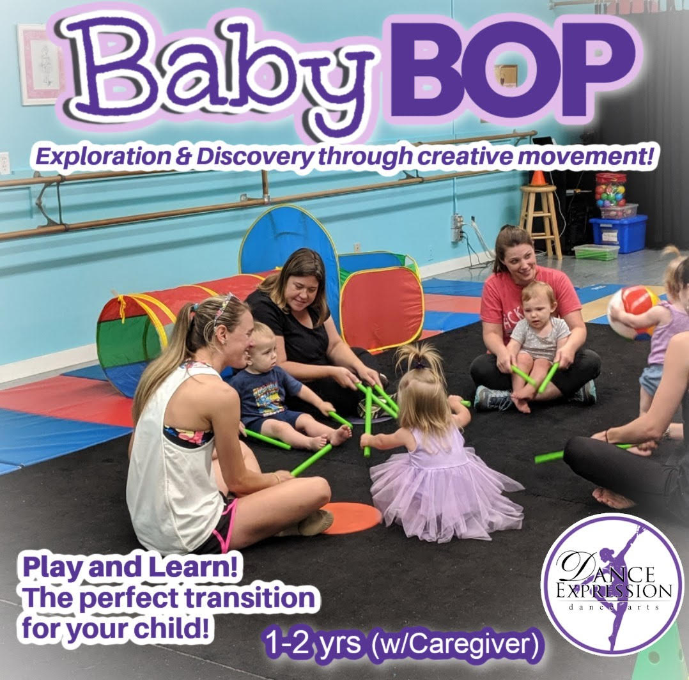

Looking for a safe way to create special memories with your little one?
Baby Bop - 1-2 yrs. and Parent
The 1 - 2 yrs Parent/Tot program (Baby Bop) is designed with the specific needs of a 1-2 yr old Toddler in mind so we can Play and Learn!.
Our class uses the Caregiver to help us orient their child through the structured and guided activities while simultaneously encouraging the child’s natural movement.
Fine and gross motor skills are developed along with social skill development using music, tumbling, obstacle courses, dance, parachute play, bubbles and more! Boppin' Babies is the perfect transition for your child!
